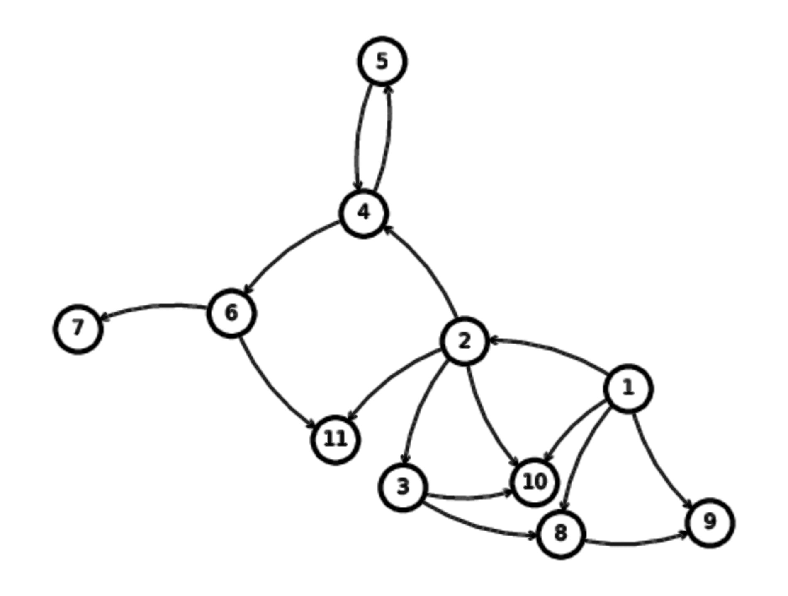

-
Nonlinear Granger Causality using Kernel Ridge Regression
paper paper replication codeIn this paper I show that the mlcausality method with kernel ridge regression outperforms rival nonlinear Granger causality algorithms. Greater accuracy is acheived at execution speeds that are 10+ times lower than competing methods.